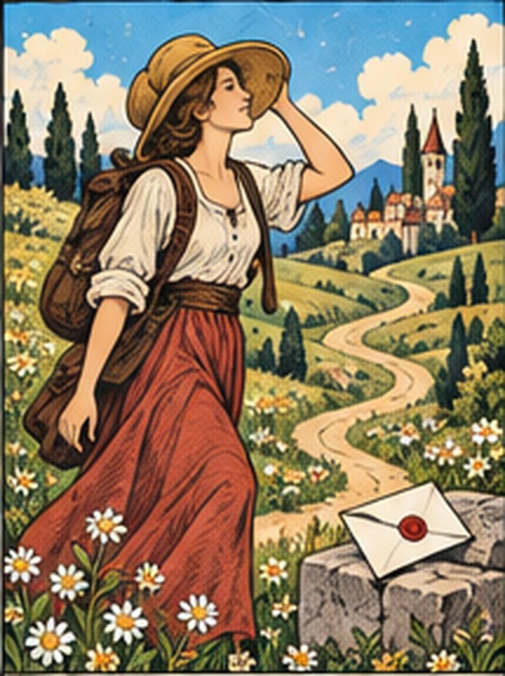
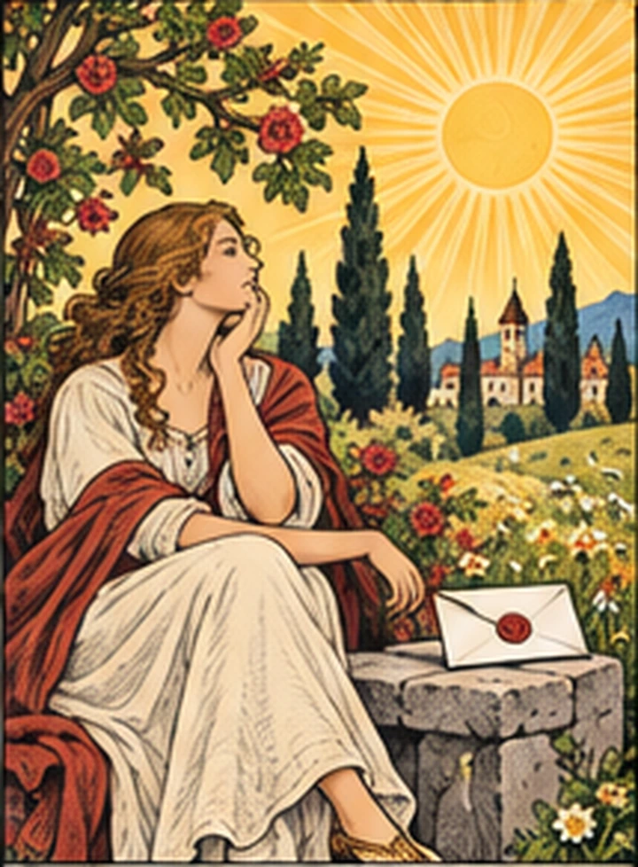

A LITTLE JOURNEY INTO YOURSELF
スピタイプ診断
あなたの中に、どんな物語がある？
偶然の受けとめ方。未来へのまなざし。
12の問いをたどると、
あなたを映す一枚に出会います。
SIXTEEN STORIES, ONE OF YOU.II余白の旅人 I希望の錬金術師 VI月待ちの導き手
物語のはじまりTHE SPIRIT TYPE COLLECTION — 01 / 16

01 — THE READING
運命よりも、
あなたの信じ方を。
同じ星を見ても、願うことは人それぞれ。
出来事の中に何を見つけ、どんな一歩を選ぶのか。
4つのまなざしから、あなたらしさを読み解きます。
未来を予言する占いではなく、
自分を知るための小さな物語です。
I — OUTLOOK
偶然に、何を見る？
希望を見つける。兆しに備える。
II — FATE
未来は、どこへ続く？
自分で選ぶ道。導かれてゆく道。
III — FLOW
運は、どうめぐる？
満ちては欠ける。次の波を呼ぶ。
IV — AGENCY
その時、どう動く？
自ら扉をひらく。訪れを待つ。
YOUR STORY IS WAITING
まだ知らない自分に、
会いにいこう。
正解はありません。いまの直感を、ひとつずつ。
全12問 約2分 無料・登録不要